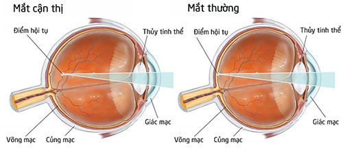
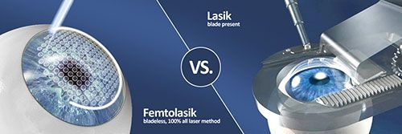

Cận thị nguyên nhân và cách điều trị
Cận thị là một trong những điều phiền toái ảnh hưởng không nhỏ đến cuộc sống hàng ngày
của chúng ta. Nhưng liệu chúng ta có đủ kiến thức về nguyên nhân và cách chữa bệnh cận
thị hay không?
Cận thị là gì?
Cận thị (Myopia, Nearsightedness) là tật khúc xạ thường gặp nhất ở mắt, và trở nên phổ
biến hơn trong những năm gần đây.
Mặc dù nguyên nhân chính xác của sự tăng nhanh tỷ lệ người mắc tật cận thị trong những
năm gần đây vẫn chưa được xác định rõ ràng, nhiều bác sĩ nhãn khoa cho rằng nó có liên
quan đến việc tình trạng mắt mệt mỏi do sử dụng máy tính và các công việc nhìn gần kéo
dài khác hoặc do di truyền.

Nguyên nhân gây cận thị?
Cận thị xảy ra khi trục nhãn cầu quá dài, liên quan đến công suất hội tụ của giác mạc và
thể thủy tinh của mắt, khiến những tia sáng đi vào mắt hội tụ tại một điểm trước võng
mạc thay vì đúng ngay tại võng mạc. Bệnh cũng có thể xảy ra do giác mạc và/hoặc thể thủy
tinh quá cong so với nhãn cầu. Trong một vài trường hợp, cận thị còn do sự kết hợp của
các nguyên nhân trên.
Cận thị thường bắt đầu khi còn nhỏ và con cái sẽ có nguy cơ mắc tật cận thị cao hơn nếu
cha mẹ cũng bị cận. Trong hầu hết trường hợp, bệnh sẽ ít tăng độ hơn khi trưởng thành;
nhưng thỉnh thoảng nó vẫn tiếp tục tiến triển theo tuổi.
Cách chữa bệnh cận thị
Tật cận thị có thể chữa trị bằng cách đeo kính có gọng, kính áp tròng hoặc phẫu thuật
khúc xạ. Tùy thuộc vào mức độ cận thị, bạn có thể phải đeo kính có gọng hoặc kính áp
tròng liên tục hoặc chỉ khi cần nhìn xa rõ, như lái xe, nhìn bảng khi học hoặc xem phim.
Chọn kính cận tốt nên có tròng kính có độ chiết suất cao (giúp kính mỏng hơn và nhẹ hơn)
và có lớp chống lóa. Ngoài ra, nên chọn lựa kính quang học tự đổi sang màu sẫm hơn khi
ra nắng để bảo vệ mắt khỏi tia UV và ánh sáng xanh có hại, cũng như tiết kiệm chi phí
cho kính mát.
Khi đeo kính cân, con số đầu tiên (“sphere”) trên toa kính sẽ đứng sau dấu (-), số càng
cao nghĩa là bạn cận càng nặng.
Phẫu thuật khúc xạ có thể giúp giảm hoặc thậm chí là giúp bạn không cần đeo kính. Thủ
thuật phổ biến nhất là phẫu thuật thực hiện với Laser Excimer.
– Trong phẫu thuật PRK (Photo Refractive Keratectomy), tia laser sẽ loại bỏ một lớp mô
giác mạc, làm phẳng giác mạc phẳng và cho phép các tia sáng hội tụ đúng trên võng mạc.
– Trong phẫu thuật LASIK – phương pháp phẫu thuật khúc xạ phổ biến nhất – một vạt mỏng
sẽ được tạo ra trên bề mặt của giác mạc, laser sẽ loại bỏ một số mô giác mạc và sau đó,
vạt giác mạc được đặt lại vị trí ban đầu.
– Trong phẫu thuật Femto LASIK là phương pháp tạo vạt giác mạc không cần dao mổ mà sử
dụng tia laser femtosecond. Ưu điểm của phương pháp này là vạt giác mạc được tạo ra có
độ dày ổn định và đồng đều, loại bỏ hoàn toàn biến chứng thông thường như trong phương
pháp cắt vạt bằng dao thường. Hơn nữa năng lượng sử dụng trong tia laser femtosecond
thấp và tăng tính an toàn trong phẫu thuật.

– Phẫu thuật ReLEx SMILE là phẫu thuật điều chỉnh tật khúc xạ không lật vạt giác mạc,
không sử dụng dao vi phẫu cơ học, có thể điều trị tật khúc xạ cho bệnh nhân có độ cận và
độ loạn thị cao..
Orthokeratology (Ortho-K) là một phương pháp không phẫu thuật, bạn mang một kính áp
tròng cứng (RGP hoặc GP) vào ban đêm, giúp điều chỉnh hình dáng giác mạc trong khi ngủ.
Khi bạn tháo kính vào buổi sáng, giác mạc tạm thời giữ lại hình dạng mới, vì vậy bạn có
thể nhìn rõ cả ngày mà không cần đeo kính có gọng hay kính áp tròng điều chỉnh mắt cận
thị.
Biện pháp này được gọi là liệu pháp điều trị khúc xạ giác mạc (CRT) đã được chứng minh
là có hiệu quả trong việc chữa trị tạm thời cận thị ở mức độ nhẹ đến trung bình. CRT
thường được áp dụng trong trường hợp bệnh nhân còn quá nhỏ không đủ tuổi để phẫu thuật
LASIK hoặc không được phép phẫu thuật vì một lý do nào khác.
Phẫu thuật đặt kính nội nhãn trên mắt còn thủy tinh thể (được gọi là Phakic IOL) là một
lựa chọn phẫu thuật khác giúp điều chỉnh độ cận thị, đặc biệt với những người cận nặng
hoặc có giác mạc mỏng hơn bình thường có thể tăng nguy cơ biến chứng khi phẫu thuật
LASIK hoặc các phẫu thuật laser điều chỉnh khác.
Phakic IOL hoạt động tương tự như kính áp tròng, ngoại trừ được đặt bên trong mắt và
thường vĩnh viễn. Không giống như kính nội nhãn trong phẫu thuật đục thủy tinh thể,
Phakic IOL không thay thế thể thủy tinh của mắt, và thể thủy tinh vẫn còn nguyên vẹn.
Cận thị thoái hóa
Trong hầu hết các trường hợp, cận thị chỉ đơn giản là chút bất tiện và ít (hoặc không)
gây nguy hiểm đến sức khoẻ của mắt. Nhưng thỉnh thoảng bệnh có thể tiến triển và trầm
trọng hơn, được xem như dấu hiệu thoái hóa. Cận thị thoái hóa (còn được gọi là cận thị
bệnh lý) là một tình trạng tương đối hiếm được cho là di truyền và thường bắt đầu từ khi
còn nhỏ.
Trong cận thị ác tính, sự kéo dài của trục nhãn cầu có thể diễn ra rất nhanh, dẫn đến
tăng độ nhanh và mất thị lực. Người bệnh có nguy cơ bị bong võng mạc và những bệnh lý
khác bao gồm xuất huyết mắt do sự phát triển bất thường của các tân mạch.
Cận thị thoái hóa cũng có thể làm tăng nguy cơ đục thủy tinh thể.
Phẫu thuật điều trị biến chứng của cận thị thoái hóa bao gồm kết hợp thuốc và thủ thuật
laser được gọi là phương pháp quang động học (photodynamic therapy).
Phương pháp này cũng được sử dụng để điều trị thoái hóa điểm vàng. Ngoài ra, một nghiên cứu
thí điểm gần đây cho biết một loại thuốc có tên 7-methylxanthine (7-mx) có tác động làm chậm
sự kéo dài của trục nhãn cầu ở trẻ từ 8 – 13 tuổi.
Trưởng khoa Phẫu thuật khúc xạ Bệnh viện Đa khoa Mắt Sài Gòn
BS CKII Trần Thị Hồng Tường
Tài liệu tham khảo: